LA TECNOLOGIA RAID
Il RAID (Redundant Array of Independent Disks) è una modalità che consente, tramite un apposito controller, di 'unire' più dischi fissi e aumentare le prestazioni di lettura/scrittura su hard disk. Il controller può essere già integrato sulla scheda madre se lo supporta oppure può essere acquistato come scheda aggiuntiva. In questa guida considereremo il caso di un controller che supporta 4 canali aggiuntivi.
Per prima cosa, nel creare un sistema Raid è consigliabile utilizzare dischi fissi identici, per velocità, capacità e prestazioni. Esistono varie modalità di Raid, da 0 a 6.
Nel Raid 0 (o striping) un file, prima di essere copiato su disco dalla ram, viene diviso in un numero di segmenti pari al numero di dischi costituenti il Raid. Se ho un raid di tre dischi fissi, ogni file al momento della scrittura su hard disk verrà diviso in tre parti, e quando servirà leggerlo la velocità sarà triplicata
Il Raid 0 non è consigliato poiché poco sicuro (nel caso di guasto ad uno dei dischi i dati risultano illeggibili)
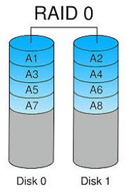
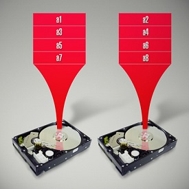
Nel RAID 1: Duplicazione dei dati (mirroring) su due dischi in modo trasparente. I dati sono duplicati nella loro interezza, duplicando quindi anche i costi per le memorie di massa necessarie. In caso di guasto ad un’unità, il sistema legge i dati dall’unità gemella in modo automatico ed immediato. Si può sostituire il disco e procedere al “rebuild” del mirroring.
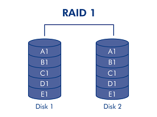
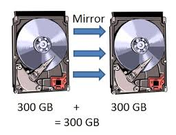
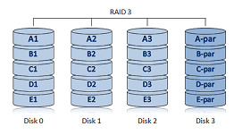
Nel Raid 3 utilizza la tecnica dello striping e per la sicurezza utilizza la tecnica del controllo di parità.
Lo striping, in questa configurazione, avviene a livello di Byte e nello stesso modo viene calcolata la parità, ovverosia quella somma binaria che consente, a ritroso, di ricalcolare il dato eventualmente mancante.
Utilizza un minimo di due dischi per i dati, più un disco dedicato alla memorizzazione dei Byte di parità.
Le prestazioni in lettura sono migliori del singolo disco, poiché i dati vengono letti da più dischi contemporaneamente, visto l’uso della tecnica di striping.
Le prestazioni in scrittura peggiorano, poiché per ogni operazione eseguita sui dati necessita del calcolo della parità, da scrivere sul disco dedicato a questa funzione.
Inoltre, poiché il disco dedicato alla parità è unico, questo costituisce anche una specie di collo di bottiglia che può limitare ulteriormente le prestazioni in scrittura (infatti mentre i dati sono scritti su vari dischi, la parità viene scritta, per ogni operazione di scrittura, sempre sullo stesso disco).
Per assurdo, aumentando i dischi, le prestazioni in lettura migliorano e quelle in scrittura possono addirittura peggiorare.
La ricostruzione dell’array in caso di guasto di un disco può avvenire, a seconda delle caratteristiche del controller e del sistema, sia in avvio del sistema stesso o durante il normale funzionamento.
Ovviamente la ricostruzione “on line” degrada le prestazioni del sistema in modo sensibile.
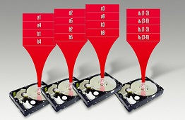
Nel Raid 4 divide i dati (stripes) a livello di blocchi sui dischi che compongono l' array, mentre i controlli di parità sono immagazzinati su un altro disco. Queste informazioni extra sono necessarie per il recupero dei dati nel caso di guasto ad uno dei dischi dell' array. Le operazioni di lettura dei dati sono assai veloci, paragonabili al level 0, mentre la scrittura è lievemente rallentata dalla necessità di creare le informazioni di parità. Solitamente Level 4 é accompagnato da altre tecnologie , come cache write back , perché l' implementazione della paritá puó costituire un collo di bottiglia nel caso di scritture random di grossi file o sequenziali.RAID 4 é tipico di sistemi di medie e grandi dimensioni
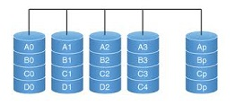
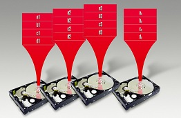
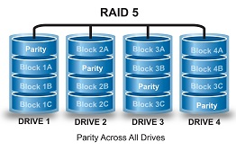
Nel Raid 5 distribuendo la paritá su diversi o tutti i dischi dell'array, il Level 5 riduce l' effetto collo di bottiglia tipico di RAID 4 : le prestazioni sono elevate, sia in scrittura che lettura, mentre il fattore di sicurezza è molto alto. Tipico dei sistemi ad alto livello , RAID 5 considera anche l' impiego di controller con cache o con processori multipli o in tecnologia I2O . RAID 5 é tipico di sistemi di medie e grandi dimensioni , particolarmente nel caso di multitask e multiuser . L' impiego è molto diffuso su server e workstation dove velocità e sicurezza sono indispensabili.
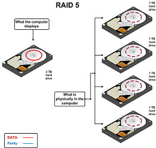
Nel Raid 6 raddoppiando il sistema di paritá di Level 5 si ottiene un incremento della sicurezza.
Questo sistema é scarsamente impiegato.
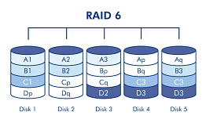
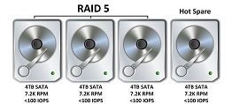
TABELLA LIVELLI RAID:
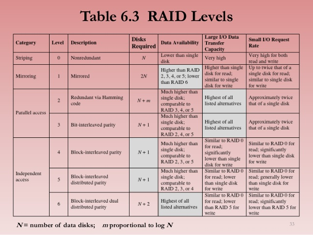